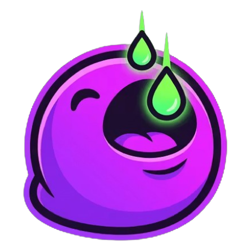
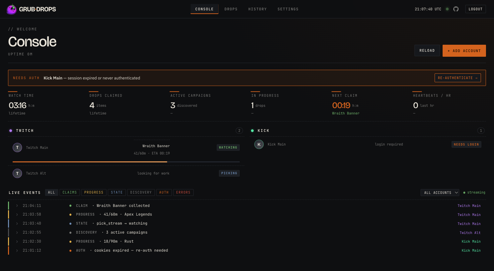
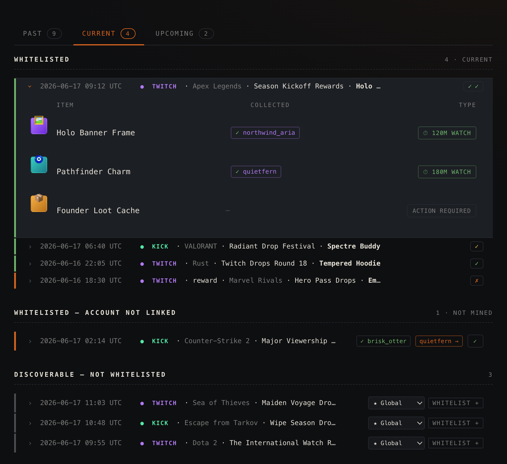
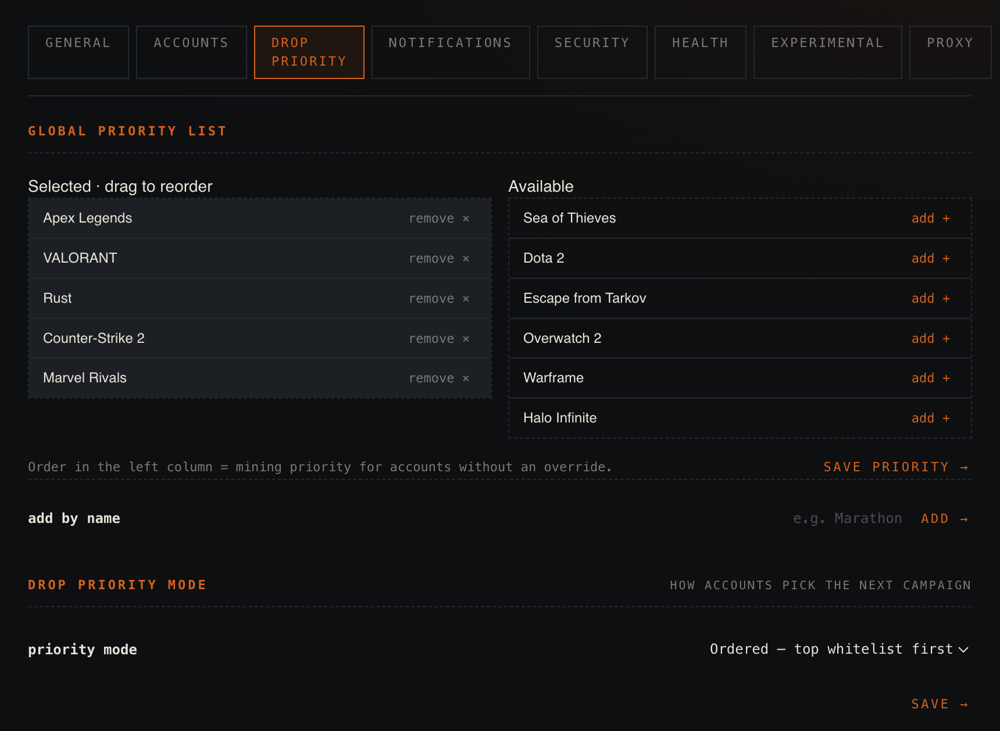

GrubDropsAFK-farms timed drops across both platforms, auto-claims them, and switches channels for you. Multi-account, web UI, one docker compose up.



It only mines games you opt into, global or per account. Nothing else burns watch-time.
Several accounts on each platform, all tracked on one page.
Confirms the stream is on the right game before crediting, so you never mine the wrong channel.
Twitch uses the official device-code login; Kick uses a session you export. No passwords sent anywhere.
Per-event-type toggles for claims, auth, and discovery.
One Go binary and a SQLite file. arm64 images ship for Raspberry Pi.
Published image, single compose file. Open http://localhost:8080 and create the admin login.
services:
miner:
image: ghcr.io/aalejandrofer/grubdrops:latest
restart: unless-stopped
ports: ["8080:8080"]
environment:
GRUB_MASTER_KEY: ${GRUB_MASTER_KEY:?run: head -c32 /dev/urandom | base64}
GRUB_DB_PATH: /data/miner.db
volumes:
- ./data:/data
- /var/run/docker.sock:/var/run/docker.sock